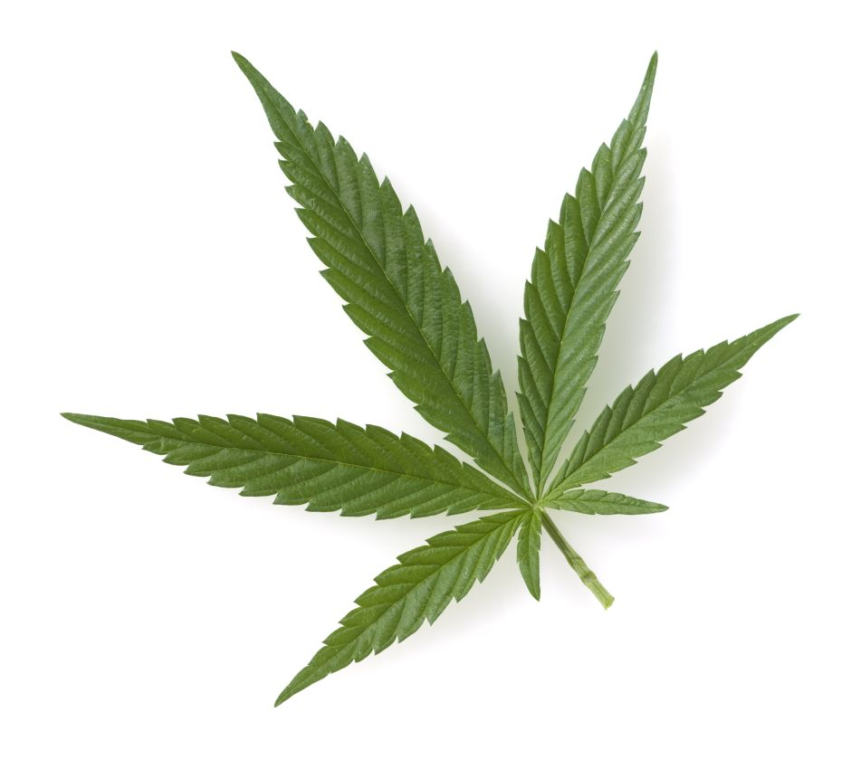
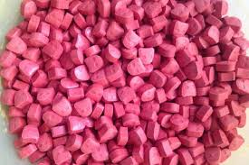

Las drogas
Cannabis

El cannabis es una planta natural que se utiliza en tres formas principales.
El tipo más común se llama la resina, que viene en bloques o trozos sólidos
de color oscuro. El menos común son las hojas y los tallos de la planta, llamado
hierba o maría. El tercer tipo, aceite de cannabis, apenas se ve en Irlanda.
Extasis

El éxtasis se suele elaborar en laboratorios clandestinos de algunos países
europeos. Normalmente se vende en pastillas que tienen dibujados diversos
logotipos o diseños. En ocasiones las pastillas de éxtasis pueden contener
otras drogas y sustancias.
Heroina
La heroína es una droga opiácea (derivada del opio) elaborada a partir
de la morfina, una sustancia natural que se extrae de la vaina de semillas
de varias plantas de amapola (adormidera) que se cultivan en el sudeste y
sudoeste de Asia, en México y en Colombia. La heroína puede presentarse en
forma de polvo blanco o marrón, o como una sustancia negra pegajosa que se
conoce como "alquitrán negro".
Cocaina
La cocaína es un polvo blanco que se elabora a partir de las hojas de
la coca, una planta que crece principalmente en Suramérica. Se suele consumir
inhalando el polvo a través de la nariz. El ‘crack’ no es una droga distinta,
sino que es una forma más adictiva de la cocaína. El crack, también llamado
"roca", "piedra" o "base libre" se suele fumar. La cocaína a veces se inyecta
o se come.
Anfetaminas
Las anfetaminas son un grupo de drogas estimulantes; algunas de ellas se
utilizaron en el pasado como pastillas de adelgazamiento. Normalmente se presentan
en un polvo blanco grisáceo y se venden en paquetes de papel envueltos, llamados
‘papelina’. Se suelen tragar, pero también se pueden inyectar o esnifar. Un tipo
conocido como ‘hielo’ o ‘cristal’ se puede fumar.